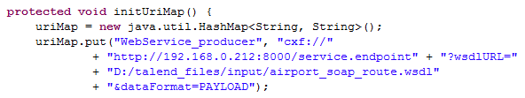
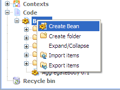
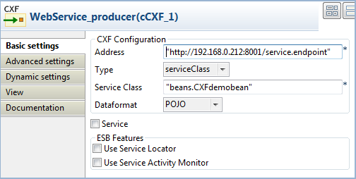
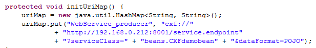

|
Famille de composant |
Messaging | ||||
|
Fonction |
Le composant cCXF fournit l'intégration avec Apache CXF pour la connexion aux services JAX-WS. | ||||
|
Objectif |
Le cCXF est utilisé pour produire ou consommer un service Web à partir d'un fichier WSDL ou d'une classe Java. | ||||
|
Basic settings |
CXF Configuration/Address |
URL de l'endpoint du service où le service Web est fourni. | |||
|
|
CXF Configuration/Type |
Sélectionnez le type que vous souhaitez utiliser pour fournir le service Web entre wsdlURL et serviceClass. wsdlURL : Sélectionnez ce type pour fournir le service Web à partir d'un fichier WSDL. serviceClass : Sélectionnez ce type pour fournir le service Web à partir d'une classe Java SEI (Service Endpoint Interface). | |||
|
|
CXF Configuration/WSDL File |
Ce champ s'affiche lorsque le type de service wsdlURL est sélectionné. Parcourez votre système ou saisissez le chemin d'accès à votre fichier WSDL utilisé pour fournir le service Web. | |||
|
|
CXF Configuration/Service Class |
Ce champ s'affiche lorsque le type de service serviceClass est sélectionné. Saisissez le nom de la classe du service à utiliser pour fournir le service Web. | |||
|
|
CXF Configuration/Dataformat |
Style d'échange des données. MESSAGE, PAYLOAD, ou POJO. MESSAGE : message brut reçu de la couche de transport. PAYLOAD : charge utile du message (payload), contenu
de POJOs : (Plain Old Java Objects) paramètres Java de la méthode invoquée sur le serveur cible. | |||
| Service | Cochez cette case pour spécifier le port du service. Cette option est particulièrement utile lorsqu'il y a des ports multiservice dans le WSDL ou dans la classe du service. | ||||
| Service Name | Nom du service que ce service implémente. Il mappe vers
wsdl:service@name au format
ns:SERVICE_NAME où ns est l'espace de
nommage du service. | ||||
| Port Name | Nom de l'endpoint que ce service implémente. Il mappe vers
wsdl:port@name, au format ns:PORT_NAME où
ns est l'espace de nommage du service. | ||||
| ESB Features/Use Service Locator | Maintient la disponibilité du service pour répondre aux demandes et aux accords de niveau de service (SLAs). La table Custom Properties
apparaît lorsque la case Use Service
Locator est cochée. Cliquez sur le bouton | ||||
| ESB Features/Use Service Activity Monitor |
Capture les événements et stocke les informations pour faciliter les analyses en profondeur de l'activité des services ainsi que suivre et tracer des messages via une transaction métier. Cette option peut être utilisée pour analyser les temps de réponse des services, identifier les modèles de transport, identifier les messages en entrée et en sortie des services et analyser les causes éventuelles de l'échec des appels du service, par exemple.
| ||||
| Advanced settings | Arguments | Configurez les arguments facultatifs dans la table correspondante. Cliquez sur le bouton [+] autant de fois que nécessaire pour ajouter des arguments à la table. Cliquez ensuite sur le champ Value correspondant pour saisir une valeur. Consultez le site http://camel.apache.org/cxf.html (en anglais) pour voir les options d'URI disponibles. | |||
|
Utilisation |
Le composant cCXF peut être un composant de début, un composant intermédiaire ou un composant de fin dans une Route. | ||||
|
Limitation |
L'utilisation de plusieurs composants cCXF ayant le même nom dans une route n'est pas supportée. | ||||

![[Note]](../images/note.png)
Dans ce scénario, un service Web est produit par un composant cCXF à l'aide d'un fichier WSDL.
Ce scénario utilise un composant cCXF et un cProcessor.
Dans la Palette, développez le dossier Messaging, sélectionnez le composant cCXF et déposez-le dans l'espace de modélisation graphique.
Développez le dossier Processor, sélectionnez le composant cProcessor et déposez-le dans l'espace de modélisation graphique.
Cliquez-droit sur le composant cCXF, sélectionnez Row > Route dans le menu contextuel et cliquez sur le composant cProcessor.
Nommez le composant cCXF afin de mieux identifier sa fonctionnalité.
Dans ce scénario, le composant cProcessor est utilisé uniquement pour activer le cCXF, pour qu'il fonctionne comme un producteur de service. Il ne nécessite donc aucune configuration.
Double-cliquez sur le composant cCXF pour afficher sa vue Basic settings.

Dans le champ Address, saisissez l'URL de l'endpoint du service pour le service Web à fournir, http://192.168.0.212:8000/service.endpoint dans cet exemple.
Dans la liste Type, sélectionnez wsdlURL pour activer la production du service Web à partir d'un fichier WSDL.
Dans le champ Wsdl File, parcourez votre système ou saisissez le chemin d'accès au fichier WSDL à utiliser.
Dans la liste Dataformat, sélectionnez le mode PAYLOAD.
Appuyez sur Ctrl+S pour sauvegarder votre route.
Cliquez sur l'onglet Code au bas de l'espace de modélisation graphique pour visualiser le code généré.
Comme affiché dans le code, le composant cCXF nommé WebService_producer produit le service Web à partir d'un fichier d'entrée
airport_soap_route.wsdlà l'aide de l'URL de l'endpointhttp://192.168.0.212:8000/service.endpoint.Cliquez sur la vue Run pour l'afficher et cliquez sur le bouton Run pour lancer l'exécution de votre Route. Vous pouvez également appuyer sur F6 pour l'exécuter.
Résultat : Le service est démarré avec succès. Vous pouvez y accéder depuis un navigateur Web en utilisant l'URL de l'endpoint du service suivie de
?wsdl.
Dans ce scénario, un service Web est fourni par un fichier de classe Java à l'aide d'un composant cCXF.
Dans la vue Repository, développez le nœud Code et cliquez-droit sur le nœud Beans. Dans le menu contextuel, sélectionnez Create Bean.
L'assistant [New Bean] s'ouvre. Dans le champ Name, saisissez un nom pour le bean, par exemple, CXFdemobean. Cliquez sur Finish pour fermer l'assistant.

Changez le type de classe en
interface, modifiez le type de retour enstringet supprimer le corps du message.package beans; public interface CXFdemobean { public String helloExample(String message) ; }Appuyez sur Ctrl+S pour sauvegarder votre bean.
Ce scénario utilise un composant cCXF et un cProcessor.
Dans la Palette, développez le dossier Messaging, sélectionnez le composant cCXF et déposez-le dans l'espace de modélisation graphique.
Développez le dossier Processor, sélectionnez le composant cProcessor et déposez-le dans l'espace de modélisation graphique.
Cliquez-droit sur le cCXF, sélectionnez Row > Route dans le menu contextuel et cliquez sur le cProcessor.
Nommez les composants comme vous le souhaitez pour mieux identifier leur fonction.
Dans ce scénario, le composant cProcessor est utilisé uniquement pour activer le cCXF afin qu'il fonctionne comme un producteur de service. Il ne nécessite donc aucune configuration.
Double-cliquez sur le composant cCXF pour afficher sa vue Basic settings.
Dans le champ Address, saisissez l'URL de l'endpoint du service pour le service Web à fournir, http://192.168.0.212:8001/service.endpoint dans cet exemple.
Dans la liste Type, sélectionnez serviceClass pour démarrer le service Web à partir d'une classe Java.
Dans le champ Service Class, spécifiez la classe prédéfinie du bean, CXFdemobean dans cet exemple.
Dans la liste Dataformat, sélectionnez POJO comme format des données du service.
Appuyez sur Ctrl+S pour sauvegarder votre Route.
Cliquez sur l'onglet Code au bas de l'espace de modélisation graphique pour visualiser le code généré.
Comme affiché dans le code, le composant cCXF nommé WebService_producer produit le service Web à partir d'un bean prédéfini
beans.CXFdemobeanà l'aide de l'URL de l'endpointhttp://192.168.0.212:8001/service.endpoint.Cliquez sur la vue Run pour l'afficher et cliquez sur le bouton Run pour lancer l'exécution de votre Route. Vous pouvez également appuyer sur F6 pour l'exécuter.
Résultat : Le service est démarré avec succès. Vous pouvez y accéder via un navigateur Web à l'aide de l'URL de l'endpoint du service, suivie de
?wsdl.